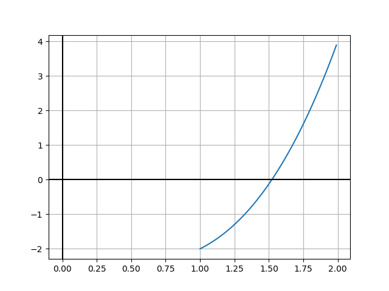

Métodos Numéricos - Bisecção
Introdução
O método da Bisecção é um método numérico que permite calcular o valor (aproximado) das raizes de uma equação não linear.
Para garantir a solução, usando este método, as seguintes condições têm de se verificar:
- f contínua em [a, b]
- f(a)f(b) < 0
- Só existe um zero no interior do intervalo [a, b]
As condições (1) e (2) sugerem-nos um processo bastante simples para obter uma aproximação do zero de uma função. Supondo que só existe um zero da função f no interior do intervalo [a, b] (condição (3)), o processo consiste em dividir o intervalo dado ao meio e testar de novo a condição (2) nos subintervalos \[ [a, \frac{a + b}{2}]\] e \[ [ \frac{a + b}{2}, b] \] para determinar qual deles contém a raiz. O processo é repetido para o novo subintervalo até que se obtenha uma precisão prefixada.
Pseudocódigo
Condição suficiente de convergência do método
- f contínua em [a, b]
- f(a)f(b) < 0
Inicialização
a0 = a, b0 = b, x0 = a ou x0 = b
Ciclo
Para \[ m \ge 0 \] fazer \[ x_{m+1} = \frac{a_m + b_m}{2}\] Se \( |x_{m+1} - x_m | \le \epsilon \) ou \( |f(x_{m+1})| \le \epsilon \)
então fazer xm+1 e retornar.
Caso contrário:
Se \[ f(x_{m+1})f(a_m) < 0\] então fazer:
\( a_{m+1} = a_m \) e \( b_{m+1} = x_{m+1} \)
Se não fazer:
\(a_{m+1} = x_{m+1} \) e \(b_{m+1} = b_m \)
Implementação em Java
Consideremos a seguinte função: \[ f(x) = x^3 - x - 2.0\] e queremos encontrar o zero da funçaõ dentro do intervalo [1.0, 2.0] 
Estilo imperativo
0 1.000000000000 -2.000000000000 1 1.500000000000 -0.125000000000 2 1.750000000000 1.609375000000 3 1.625000000000 0.666015625000 4 1.562500000000 0.252197265625 5 1.531250000000 0.059112548828 6 1.515625000000 -0.034053802490 7 1.523437500000 0.012250423431 8 1.519531250000 -0.010971248150 9 1.521484375000 0.000622175634 10 1.520507812500 -0.005178886466 11 1.520996093750 -0.002279443317 12 1.521240234375 -0.000828905861 13 1.521362304688 -0.000103433124 14 1.521423339844 0.000259354252 15 1.521392822266 0.000077956314 16 1.521377563477 -0.000012739468 17 1.521385192871 0.000032608157 18 1.521381378174 0.000009934278 19 1.521379470825 -0.000001402611 20 1.521380424500 0.000004265829 21 1.521379947662 0.000001431608 22 1.521379709244 0.000000014498 23 1.521379590034 -0.000000694057 24 1.521379649639 -0.000000339779 25 1.521379679441 -0.000000162641 26 1.521379694343 -0.000000074071 27 1.521379701793 -0.000000029787 28 1.521379705518 -0.000000007644 29 1.521379707381 0.000000003427 30 1.521379706450 -0.000000002109 31 1.521379706915 0.000000000659 Optional[1.5213797067990527]
Estilo funcional
0 1.000000000000 -2.000000000000 1 1.500000000000 -0.125000000000 2 1.750000000000 1.609375000000 3 1.625000000000 0.666015625000 4 1.562500000000 0.252197265625 5 1.531250000000 0.059112548828 6 1.515625000000 -0.034053802490 7 1.523437500000 0.012250423431 8 1.519531250000 -0.010971248150 9 1.521484375000 0.000622175634 10 1.520507812500 -0.005178886466 11 1.520996093750 -0.002279443317 12 1.521240234375 -0.000828905861 13 1.521362304688 -0.000103433124 14 1.521423339844 0.000259354252 15 1.521392822266 0.000077956314 16 1.521377563477 -0.000012739468 17 1.521385192871 0.000032608157 18 1.521381378174 0.000009934278 19 1.521379470825 -0.000001402611 20 1.521380424500 0.000004265829 21 1.521379947662 0.000001431608 22 1.521379709244 0.000000014498 23 1.521379590034 -0.000000694057 24 1.521379649639 -0.000000339779 25 1.521379679441 -0.000000162641 26 1.521379694343 -0.000000074071 27 1.521379701793 -0.000000029787 28 1.521379705518 -0.000000007644 29 1.521379707381 0.000000003427 30 1.521379706450 -0.000000002109 31 1.521379706915 0.000000000659 32 1.521379706683 -0.000000000725 Optional[1.5213797067990527]